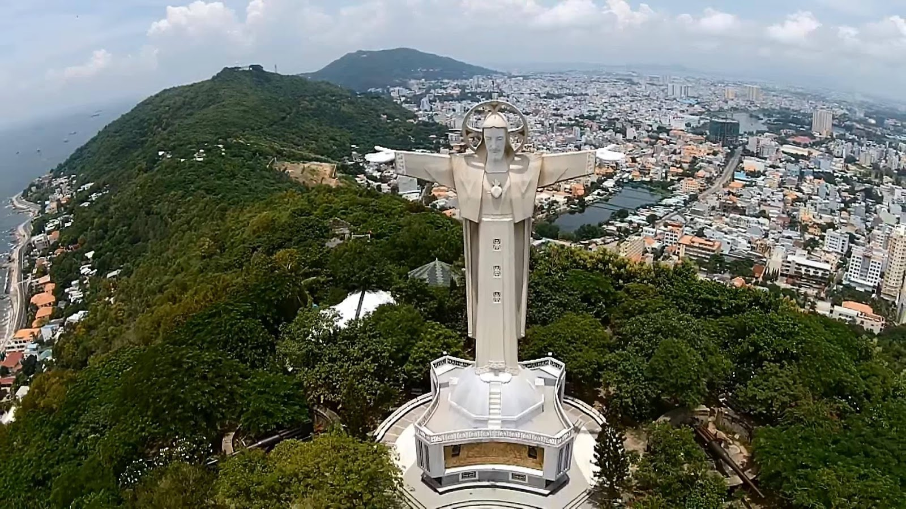
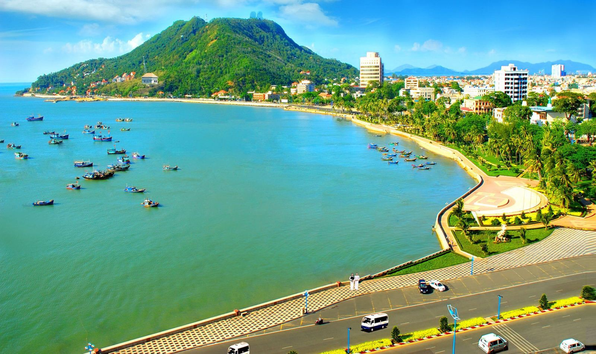
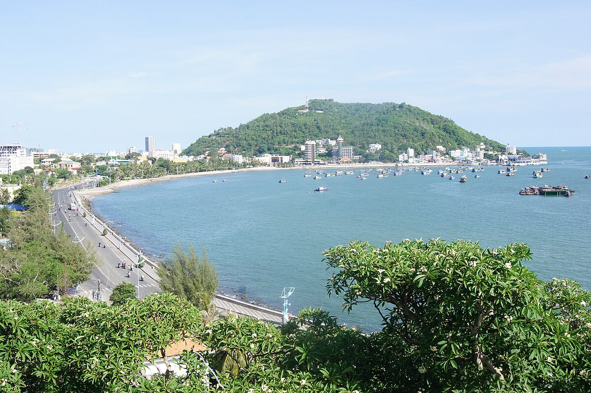
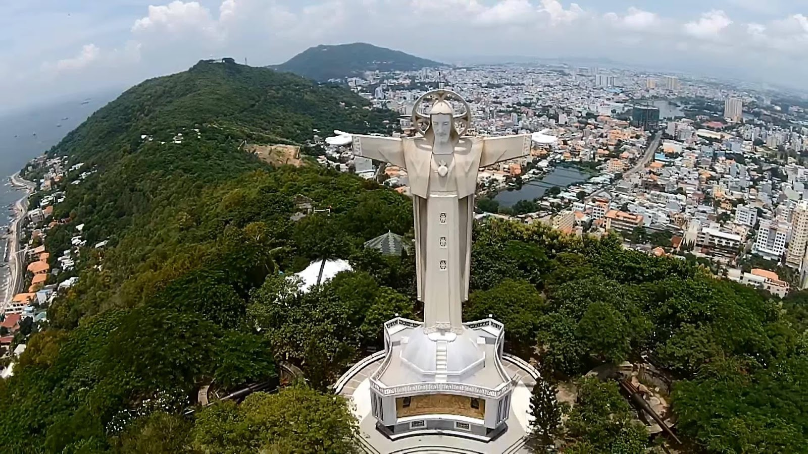
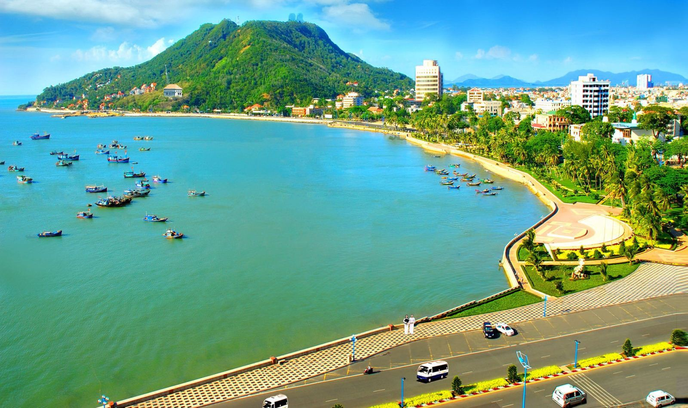
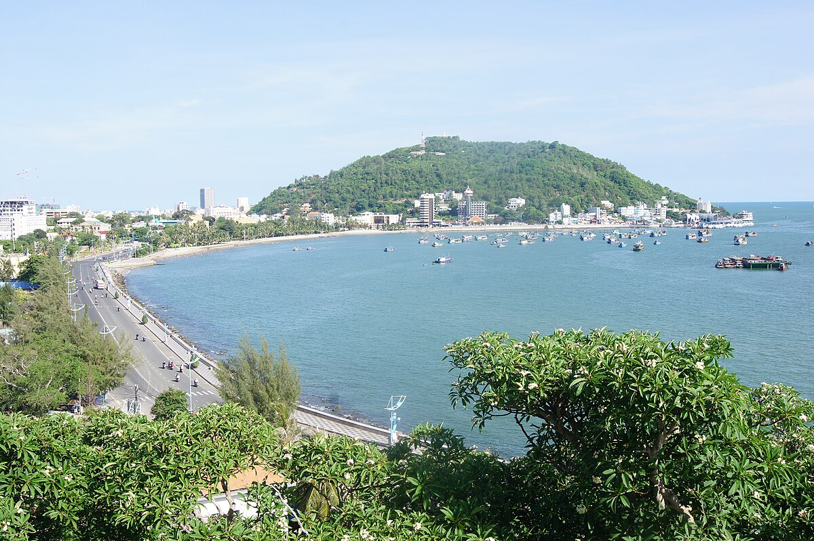

ĐẶC ĐIỂM
Giới thiệu: Bà Rịa – Vũng Tàu là một tỉnh ven biển thuộc vùng Đông Nam Bộ, Việt Nam. Vũng Tàu, thành phố du lịch biển và là trung tâm của hoạt động khai thác dầu mỏ phía Nam, đã từng là trung tâm hành chính của tỉnh. Từ ngày 2 tháng 5 năm 2012, trung tâm hành chính tỉnh chuyển đến thành phố Bà Rịa. Đây cũng là tỉnh đầu tiên của Đông Nam Bộ có 2 thành phố trực thuộc tỉnh.
Dân số: 1.337.700 người năm 2022 (chiếm 1,3% dân số Việt Nam), mật độ dân số là 674 người/km2.
Vị trí: Nằm ở phía Nam khu vực Đông Nam Bộ, phía Bắc giáp Đồng Nai, phía Tây giáp TPHCM, phía Đông giáp Bình Thuận, phía Nam giáp Biển Đông, có diện tích 1.987 km².
 




